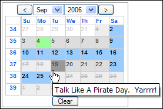

Epoch Prime AJAX JavaScript Calendar – Getting Started
For those who want to dive in, check out the minimum code required page to see the bare minimum you need to run Epoch Prime.
Introduction
 Thank you for purchasing Epoch Prime. I think you'll find the power, flexibility, and easy integration of Epoch Prime to be a major boost to your site's ROI.
Epoch Prime is a fast, low-footprint, high-powered JavaScript Calendar for use on websites which demand high interactivity from their users. Epoch Prime can be used as a datepicker or inline calendar, and utilizes the power of XML to initialize, update, and save the state of the calendar. Epoch Prime is fully standards-compliant, with minimal allotments for obsolete browsers like IE4/Netscape 4, and commonly-used browsers that deviate from web standards. As a result, Epoch Prime will work for virtually all users with JavaScript enabled – the dominant browsers out there all support it! More importantly, because of its standards-compliance, Epoch Prime is future-compatible (confirmed with Internet Explorer 7!) and its use of many of the object-oriented features of JavaScript makes it easier for the developer to maintain and extend.
Thanks for your interest in Epoch Prime!
Nick Baicoianu
Epoch Prime Lead Developer
License
Epoch Prime is governed under the license you agreed to upon downloading the installation package. If you downloaded this package as part of a free trial and you liked Epoch Prime, please purchase a license. We know you'll find it's worth the time you saved implementing Epoch Prime versus other calendars!
Registered users can always find a list of their licenses in the MeanFreePath Customer Section.
Who Epoch Prime is For
Website Owners
Epoch Prime's ease of deployment and maintenance makes it a prime choice for any website. Hoteliers and events websites will find the AJAX and XML features of Epoch Prime incredibly useful in detailing their offerings. Bloggers can use Epoch Prime to navigate their archives with ease. High-traffic sites will appreciate the low bandwidth footprint (26k for all files - compressed) of Epoch Prime when upgrading their user's experiences.
Never has it been so simple and inexpensive to upgrade your site than with Epoch Prime.
Developers
Epoch Prime is designed to be as easy for the developer to deploy as it is for the user to interact with it. Integrating Epoch Prime into your web pages doesn't require any hacks or complicated code because of its object-oriented structure. If you aren't familiar with object-oriented programming in JavaScript (or any other language, for that matter), don't fret! Using Epoch Prime's features requires no special knowledge outside of basic JavaScript and HTML. Everything you need to get Epoch Prime running on your web pages is included in this file and the example file.
Your Site's Visitors
Before you add Epoch Prime to your web pages, consider your audience: are they advanced users who use the latest technology, or less-experienced users who may not be using "modern browsers" (i.e. Internet Explorer 5.5 and below, Netscape 4 and below, IE for Mac)? You can easily check your users' browsers if your webserver has a web stats program installed – if you use cPanel you have several options available. If you think your users are the less-experienced type, we recommend you use Epoch Prime only for non-critical applications or in popup mode—that way if your users' browsers can't run Epoch Prime—or have switched off JavaScript entirely, they won't be left out in the cold.
The Basics
More information on setting up Epoch Prime is available at the Epoch Prime Setup Page.
For those who want to dive in, check out the minimum code required page to see the bare minimum you need to run Epoch Prime.
1. Uploading Epoch Prime
Before you can do anything, you must upload the Epoch Prime files (via FTP or SCP/SFTP) to a web-accessible directory on your webserver. For example, if you site's root directory is /var/www/mysite/ (UNIX/Linux), or C:\inetpub\mysite\ (for Windows), you can place them in any subdirectory, i.e. /var/www/mysite/javascript/, or C:\inetpub\mysite\css\.
2. Linking to the Epoch Prime files
Before you can begin using Epoch Prime in your page, you need to include the files necessary for Epoch Prime to function and look good. There are two files: a JavaScript file (epochprime_classes.js), and a css file(epochprime_styles.css).
The links to both files should go in the <HEAD> section of any webpage that uses Epoch Prime – make sure they point to the correct subdirectory!
<html>
<head>
<title>My Cool Calendar Page</title>
<link rel="stylesheet" type="text/css" href="[path_to_css]/epochprime_styles.css" /> <!--Epoch Prime's styles-->
<script type="text/javascript" src="[path_to_javascript]/epochprime_classes.js"></script> <!--Epoch Prime's Code-->
</head>3. Initializing and using Epoch Prime in your Page
Once you've added the 2 files in the page head, you can start using Epoch Prime! To add an Epoch Prime calendar to you page you will first need to create an empty HTML element in the page body to physically hold the calendar; <div>, <input>, <td>, <p> are all acceptable elements. The containing element should be placed at the exact location you want Epoch Prime to appear.
Syntax
When you've created the container element, you need to initialize an Epoch Prime calendar for each one. You can do this using a line of code like this:
calendar1 = new EpochPrime(container,xmlconfig);The Initialization Variables
Epoch Prime accepts two arguments on initialization:
- container
- A JavaScript resource pointing to the HTML element that will hold the calendar. Usually accessed through the JavaScript method document.getElementById('container_id').
- xmlconfig
- An XML string containing the configuration values of the calendar. See the Introduction to XML and Epoch Prime and Epoch Prime XML Specs pages for more details on the XML format. Registered Epoch Prime users also have access to our Epoch Prime XML Configurator. It makes configuration fast and easy – enter your desired configuration and the Configurator creates the XML for you to copy & paste into your page!
This code must lie inside a <SCRIPT> tag. Either value can be left blank on initialization—they can be set at any time.
Where to put it
You have a few options on where to put the Epoch Prime initializations – all will work the same.
In the Page <HEAD>
<head>
<title>My Cool Calendar Page</title>
<link rel="stylesheet" type="text/css" href="/path_to_css/epoch_styles.css" /> <!--Epoch's styles-->
<script type="text/javascript" src="/path_to_javascript/epoch_classes.js"></script> <!--Epoch's Code-->
<script type="text/javascript">
var calendar1, calendar2, calendar3; /*must be declared in global scope*/
/*put the calendar initializations in the window's onload() method*/
window.onload = function() {
var xml1 = '<configs><initcfg><name>calendar1<\/name><mode>flat<\/mode><multiselect>no<\/multiselect><\/initcfg><\/configs>';
var xml2 = '<configs><initcfg><name>calendar2<\/name><mode>popup<\/mode><multiselect>no<\/multiselect><\/initcfg><\/configs>';
var xml3 = '<configs><initcfg><name>calendar3<\/name><mode>popup<\/mode><multiselect>yes<\/multiselect><\/initcfg><\/configs>';
calendar1 = new EpochPrime(document.getElementById('calendar1_container'),xml1);
calendar2 = new EpochPrime(document.getElementById('calendar2_container'),xml2);
calendar3 = new EpochPrime(document.getElementById('calendar3_container'),xml3);
...
};
</script>
</head>In a separate .js file (using the code in blue above)
<head>
<title>My Cool Calendar Page</title>
<link rel="stylesheet" type="text/css" href="[path_to_css]epoch_styles.css" /> <!--Epoch Prime's styles-->
<script type="text/javascript" src="[path_to_javascript]epoch_classes.js"></script> <!--Epoch Prime's Code-->
<script type="text/javascript" src="[path_to_javascript]/my_declarations.js"></script> <!--Epoch Prime initializations-->
</head>Inside the containing HTML element (flat mode only)—not recommended
<body>
<h1>My cool calendars</h1>
<p>Check out our great events calendars!</p>
<div id="calendar1_container">
<script type="text/javascript">new EpochPrime(document.getElementById('calendar1_container'),xml1);</script>
</div>
<!--No "appropriate" way of associating a calendar with an inline script-->
<input id="calendar2_container" type="text" name="date" />
<div id="calendar3_container">
<script type="text/javascript">new EpochPrime(document.getElementById('calendar3_container'),xml3);</script>
</div>
</body>Summary
In short, integrating Epoch Prime into your webpage requires only 4 basic steps:
- Copy epochprime_classes.js and epochprime_styles.css to your web server's JavaScript and CSS directories.
- Include the Epoch Prime files in your page's <head>—be sure to include the correct path to the files!
- Add containing elements in your page's body where you want Epoch Prime to appear. Each element should have a unique id attribute.
- Initialize a calendar for each containing element.
For a demo that shows the minimum required code to use Epoch Prime, click here.
Tools
The code in epochprime_classes.js is heavily commented to make modification easier – developers for more highly-trafficked sites should compress their JavaScript and CSS files using MeanFreePath's Free JavaScript and CSS code compactor. The code compactor reduces your files sizes by up to 50% by removing comments and unecessary whitespace from your files. The results are faster loading times for your users, and JavaScript code that is extremely difficult for humans to read. We recommend you keep a non-compacted version of epochprime_classes.js for your own reference.
Support and Other Resources
We at MeanFreePath want your development experience with Epoch Prime to go as smoothly as possible. Here are some resource that will help you integrate Epoch Prime into your website:
- Epoch Prime Documentation and Reference
- Live Demos of Epoch Prime in action
- Adding & Removing dates from Epoch Prime
- Guide to using Epoch Prime in popup mode
- Using the XML features of Epoch Prime
- MeanFreePath Support Forums
If you've exhausted all of our documentation & forum archives and still couldn't find what you're looking for, send us an email—we'll ensure you find a solution to your question. Please include your customer number in all correspondence.